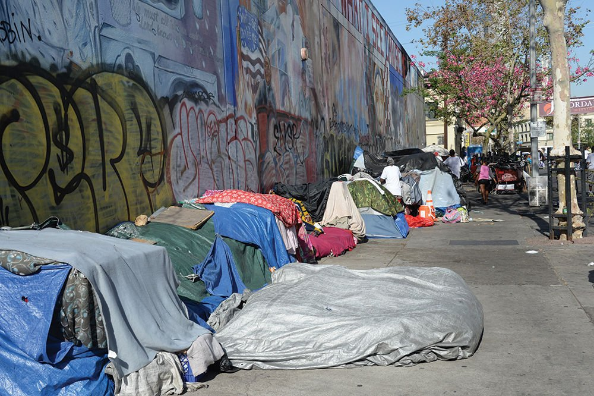
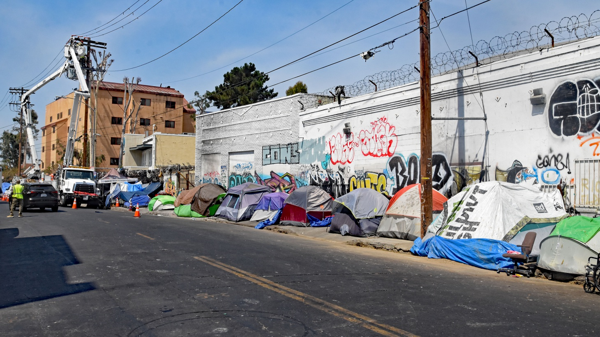
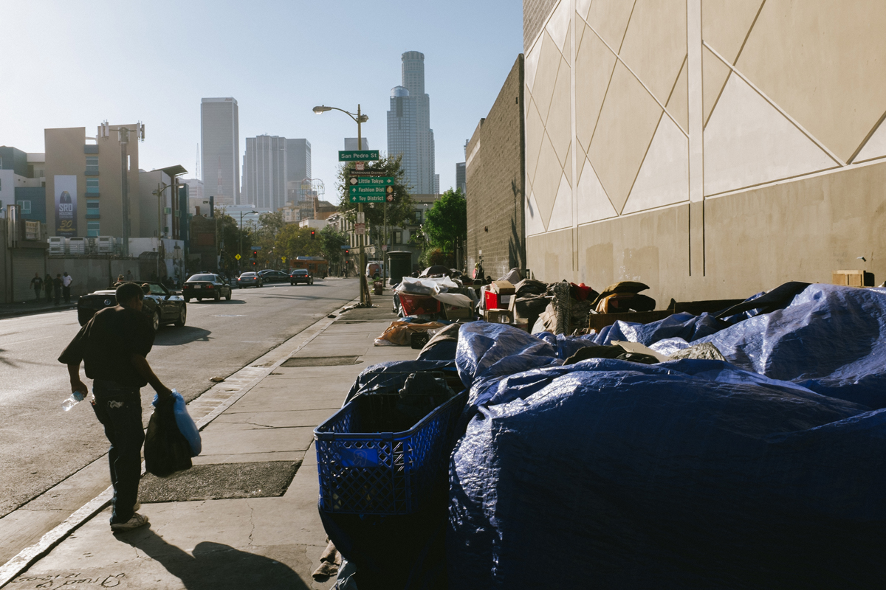
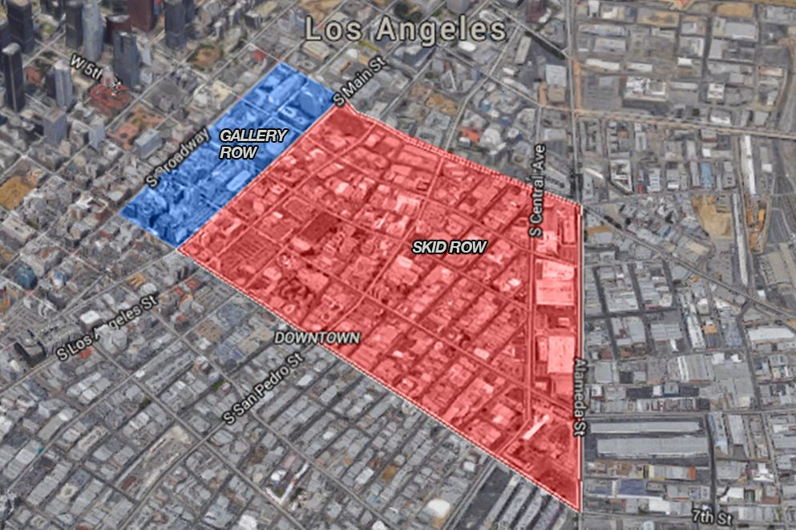
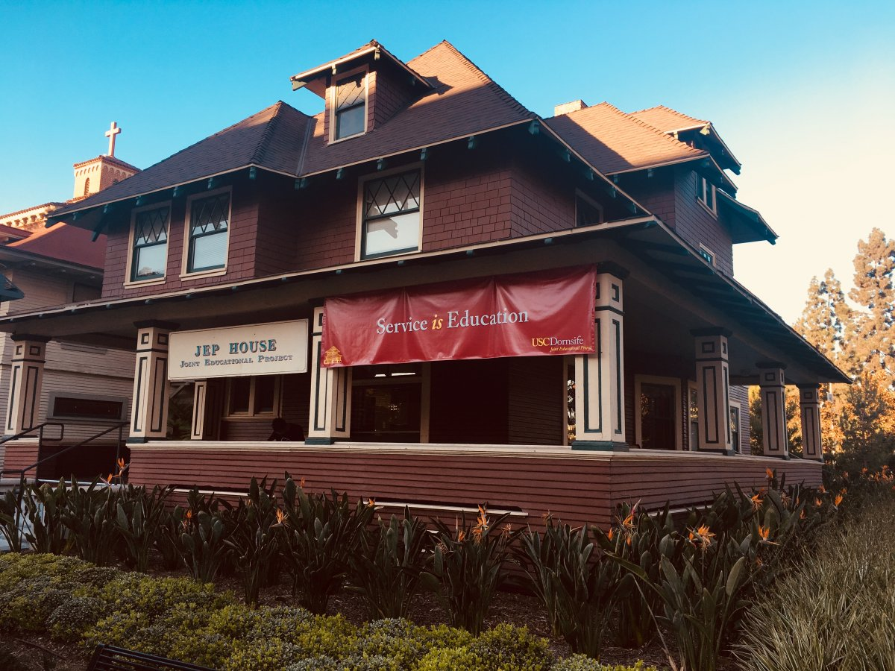

Skid Row, Explained
The hidden truth of Skid Row
Skid Row has existed for at least a century, but it wasn’t until the 1970s that it became the sprawling city it is today—a forlorn stretch of tarps and tents and SRO hotels corralled into four square miles between 3rd Street to the north, 7th to the south, Alameda to the east, and Main Street to the west. In the ensuing decades, it has become the homeless capital of America, ringed by miles of new condos and skyscrapers. An estimated 2,800 unhoused people live here at any particular time, and thousands more trek here annually from across the country, undeterred by the occasional attempts to sweep them out.
But that may soon be changing. In a stunning ruling in April, as the coronavirus began to recede from Los Angeles, U.S. District Judge David O. Carter ordered city and county officials to put a roof over the head of every homeless person living on the streets of Skid Row by fall. To prove he was serious, Carter ordered the city to place $1 billion into an escrow account to pay for fast-tracked shelter and housing—which might make this the first real attempt to reverse the decades-long practice of using the area as a human dumping ground for the poor, mentally ill, and addicted. (The city is preparing an appeal.) In the meantime, downtown’s breakneck development continues to steadily encroach on this enclave of misery. Just last month, a Denver-based developer unveiled an ambitious new plan to build a $2 billion commercial complex on the neighborhood’s southern edge.
For most Angelenos, Skid Row is a nuisance, a cautionary tale, or a shameful reminder of the city’s callous indifference to its least fortunate citizens. But for the people who live here, it’s also a community—one with its own peculiar set of leaders and laws and outlaws and hierarchies, enforced by people who are trying to make the best of the hellish reality that they’re living. Over the past year, Los Angeles writer-at-large Jason McGahan and photographer Christian Witkin made repeated visits to chronicle the Skid Row that most outsiders never see. Here are a few of the people they met along the way.
-

- 
- 
- 
- 
Our Community Partner: WaterDrop LA
Every Sunday at 11am, WaterDrop LA brings a group of 30+ volunteers to Skid Row to drop off 2,000+ gallons of water. This is what we call a "water drop".
By packing 15+ cars and trucks with water gallons and fanning out across the region, volunteers are able to reach a significant number of Skid Row residents. While a gallon a week is nowhere near sufficient for healthy survival in Los Angeles’s hot climate, we hope that this regular water distribution will curb some of the existing urgent need for clean drinking water. Thanks to the overwhelming public support we’ve received, we are able to support other organizations already working hard to fight food and water insecurity in Los Angeles.
Our Role: Student Volunteer
As college students, it is our responsibility to discover more and make practical change to the unfortunate ones in our society. Though courses poring over contemporary social problems are massive and usually mandatory in college, students often couldn’t get the gist of them without authentically wedging themselves into the role (Donahue & Luber, 2015). Joining WaterDrop LA has been a really rewarding decision that we made since it made us find what we could contribute to the LA community as students and provoke our sympathy to people in Skid Row. We are sitting in the classroom in USC because we get what we take for granted, but there're still people facing the task of re-establishing their living arrangements. WaterDrop only takes 3 hours service volunteering per weekend, and we're glad that you will join us to help!

Our Pathway to Service Learning: USC JEP (Joint Education Program)
The “Joint Educational Project” (JEP)
The “Joint” in “Joint Educational Project” refers to the enduring partnerships and collaborations with K-12 schools, non-profit organizations, and health care centers that are dedicated to serving the communities surrounding USC. JEP also partners with USC faculty and staff to offer meaningful service opportunities for students that directly contribute to and benefit our community partners. It's proud of its long-standing relationships, some of which date back to our founding in 1972.
Based in the Dornsife College of Letters Arts and Sciences, JEP is fundamentally an “Educational” organization. It is committed to developing community-based learning activities and curricula that promote student development, encourage personal reflection and require academic rigor. Much of our work in the community is in education, with many USC students serving as teaching assistants, tutors and advocates for children and adult learners.
Finally, it is a “Project,” as opposed to a “program,” indicating the dynamic and multifaceted nature of our organization. It's constantly assessing our work, incorporating feedback from participants and partners to build on and enhance our processes. This means tinkering with core programs every semester to make small improvements, and occasionally adopting sweeping reforms when warranted. It typically has several pilot projects running at any given time, many of which are initiated and implemented by students.
